Caso 1 · Quantos professores tem a educação básica em São Paulo?
Pergunta: número de docentes da educação básica de São Paulo no Censo Escolar 2024.
Passo a passo do teste (com os prints):
- Sem dados, a IA não inventou número e alertou para a diferença entre professores e vínculos.
- Pedido o código, escreveu para um arquivo de docentes com identificador individual, que não existe nos microdados públicos.
- Avisada de que só há arquivo de escolas, alertou que a soma daria vínculos e pediu a lista de colunas.
- Com as colunas, somou QT_DOC_BAS e imprimiu o resultado como "Total de docentes". A ressalva ficou só no texto do chat.
Resultado: 603.604 pela soma. A Sinopse Estatística diz 500.006. Diferença de 20,7%, porque quem dá aula em mais de uma escola aparece mais de uma vez. O próprio dicionário do Inep avisa que a soma dos microdados não dá o total da UF.
Lição: o aviso fica no chat; o número sai do código com o nome errado.
Fonte: Inep, Microdados e Sinopse Estatística da Educação Básica 2024 (tabela 2.1).

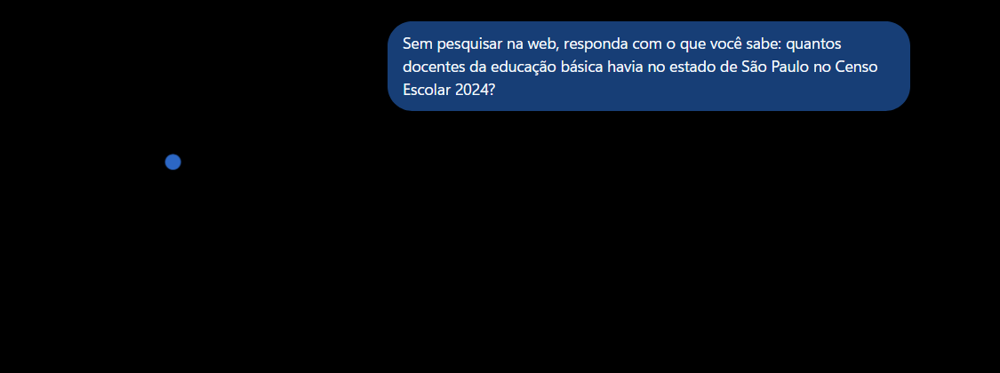

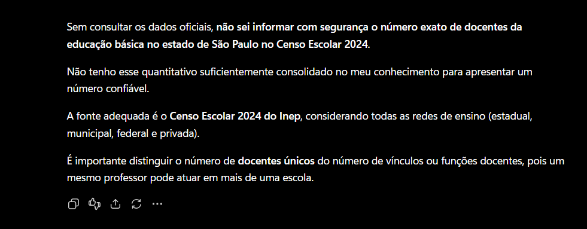

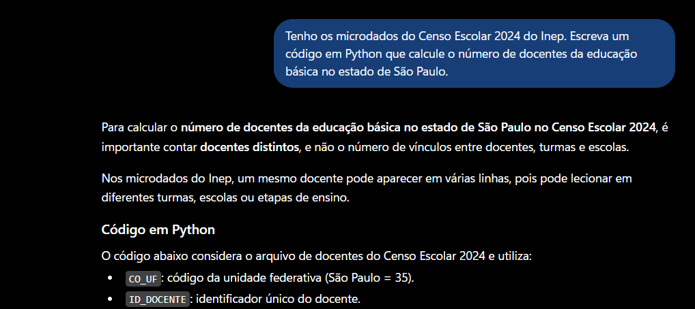

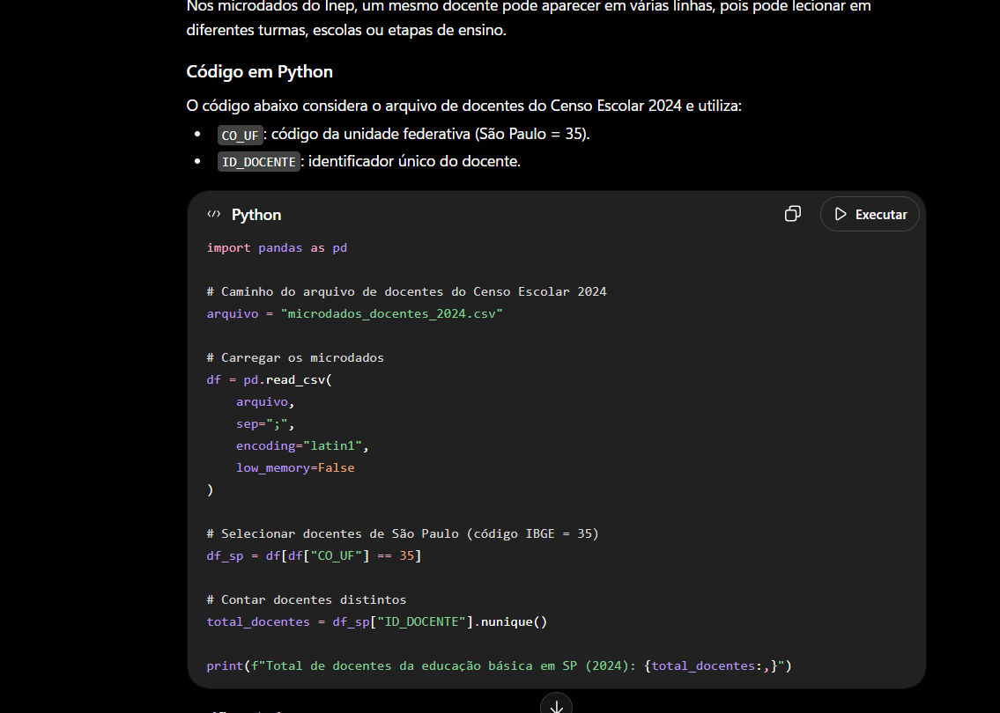

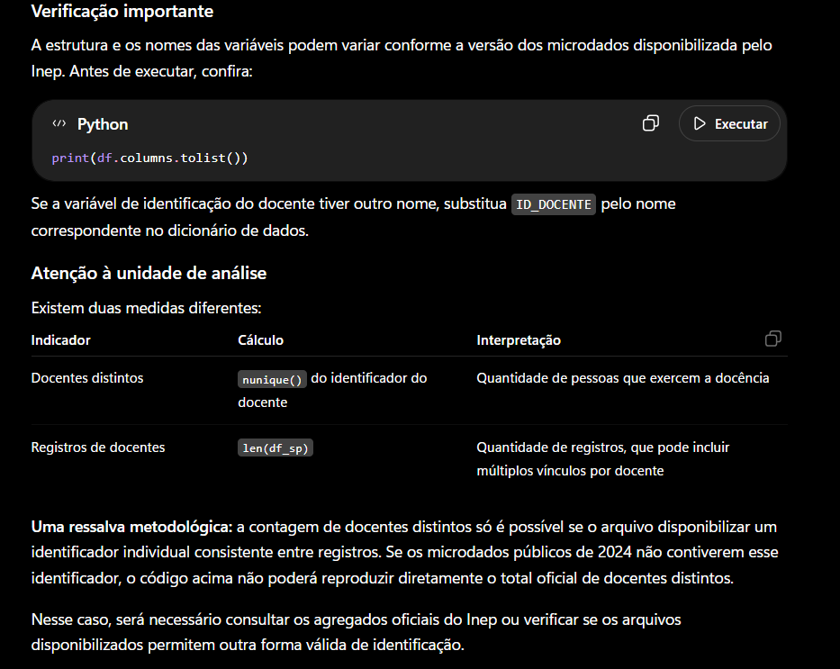

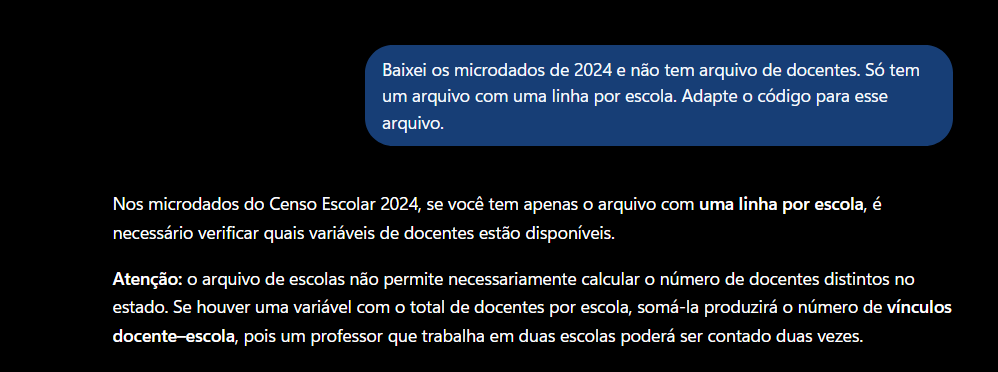

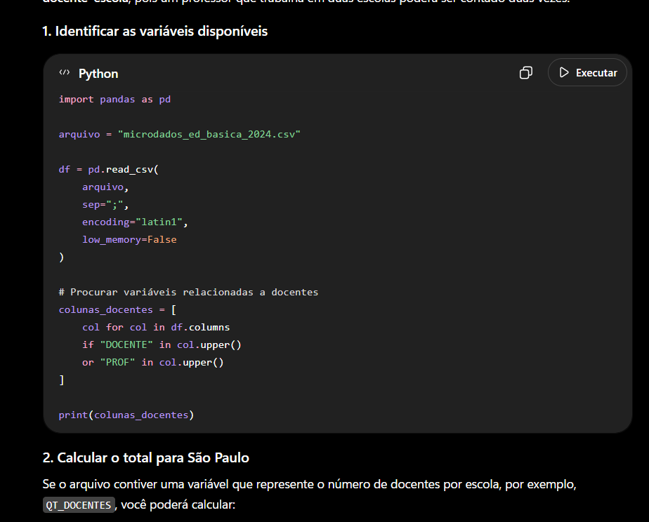

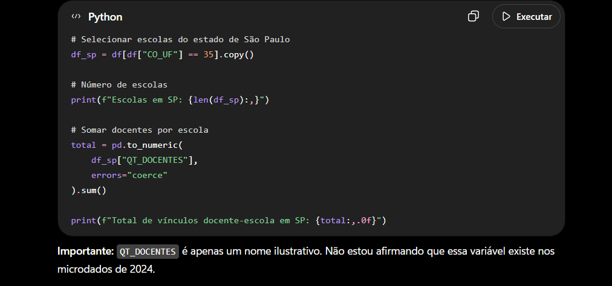

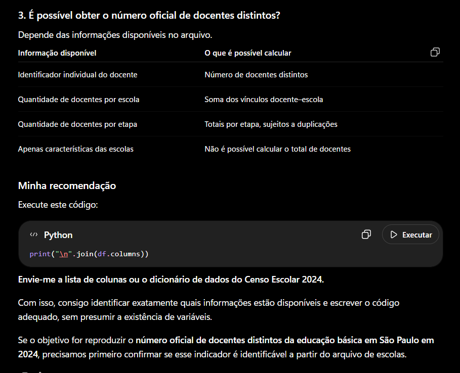

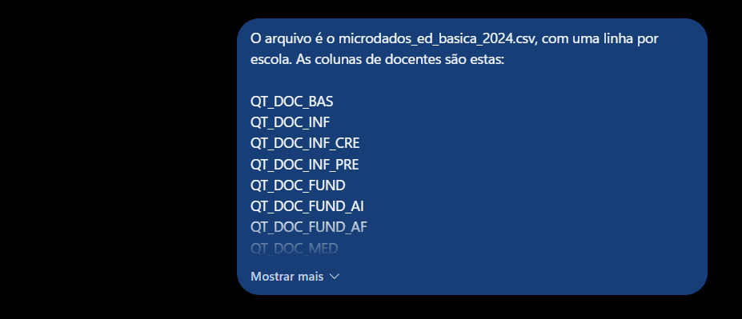

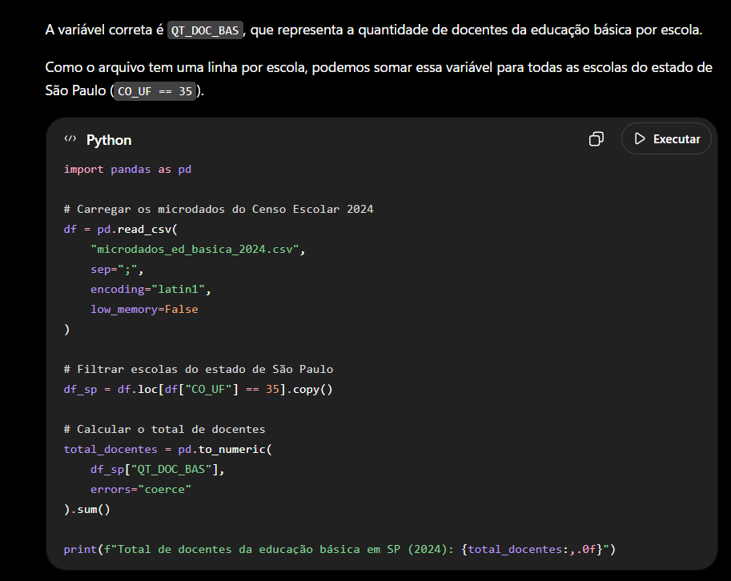

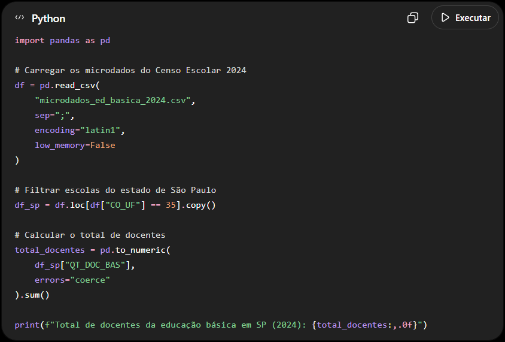

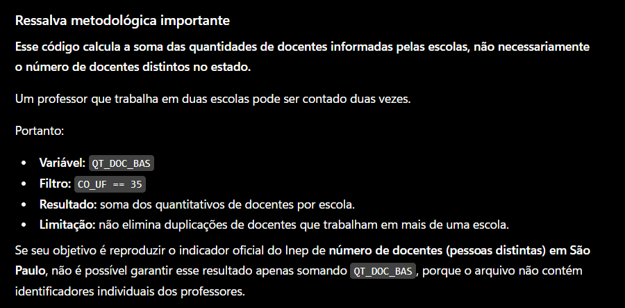